Plan wycieczki
Zwiedzone miejsca
- Sandomierz
- Zamość
- Browar Zwierzyniec
- Rzeszów
Czas wycieczki: 2 dni
Skład osobowy: 7 dorosłych, 1 dzieciak
Punkt początkowy i końcowy: Sułkowice
Zamość kusił mnie od dłuższego czasu, bo sporo czytałam o tym, że jest to piękne miasto. Tak więc jak tylko ogarnęliśmy się po przywitaniu naszego nowego członka rodziny, postanowiliśmy wybrać się na krótką wycieczkę. Była to nasza pierwsza wycieczka z takim małym bąblem, więc pakowanie zajęło nam więcej czasu niż zwykle, a bagażnik był zdecydowanie bardziej zapakowany niż na naszych poprzednich wyjazdach. Razem z nami pojechała też rodzina mojego męża, więc mieliśmy całkiem sporą ekipę. Małą nosiliśmy głównie w chuście, ponieważ chciałam uniknąć sytuacji, gdzie będę musiała zrezygnować ze zwiedzania lub szukać dróg naookoło, dostosowanych do wózka.
Zwiedzanie
Sandomierz
Naszą podróż rozpoczęliśmy od Sandomierza, jednego z najstarszych miast w Polsce. Spacer zaczęliśmy od rynku otoczonego zabytkowymi kamienicami. Ponieważ kręcono tutaj serial "Ojciec Mateusz" organizowane są tu specjalne wycieczki śladami wspomnianego księdza, ale my postanowiliśmy odkrywać Sandomierz na własną rękę. Odwiedziliśmy zbrojownię, gdzie można było nie tylko zobaczyć dawne uzbrojenie i elementy wyposażenia rycerzy ale również przymierzyć je i zrobić sobie zdjęcie. Przeszliśmy przez Ucho Igielne czyli najwęższe przejście w mieście, które dawniej stanowiło furtę w murach obronnych. Dziś ma zaledwie kilkadziesiąt centymetrów szerokości. Podczas spaceru dotarliśmy także w okolice klasztoru dominikanów przy kościele św. Jakuba, jednym z najstarszych ceglanych kościołów w Polsce, którego historia sięga XIII wieku. Na koniec wybraliśmy się do lessowego Wąwozu Królowej Jadwigi. Jego ściany miejscami osiągają nawet 10 metrów wysokości a wzdłuż ścieżki wystają z nich korzenie drzew. To jedna z najbardziej charakterystycznych atrakcji przyrodniczych Sandomierza.
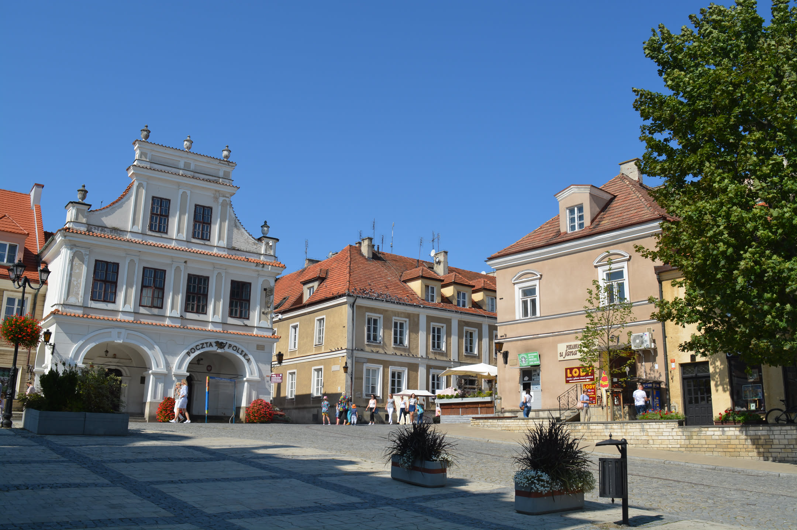
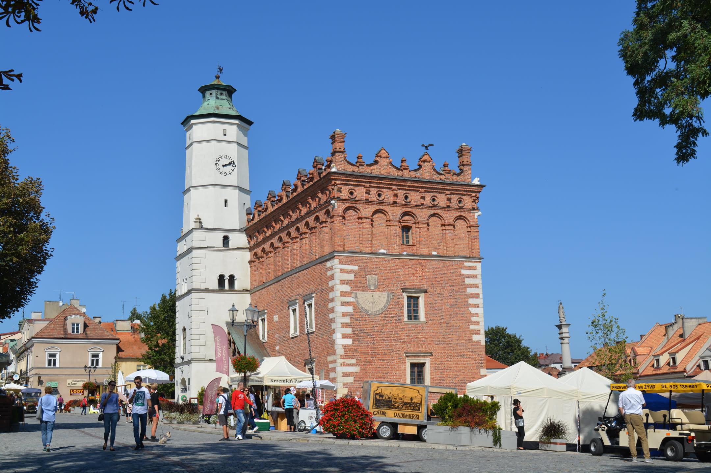
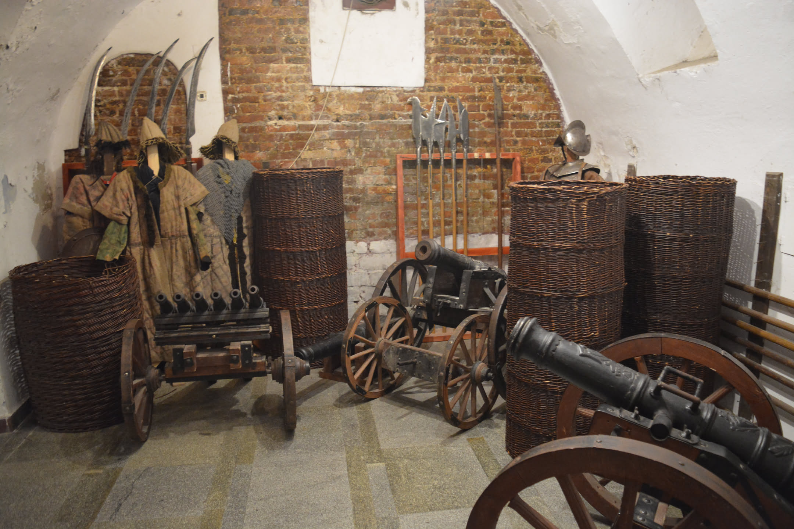
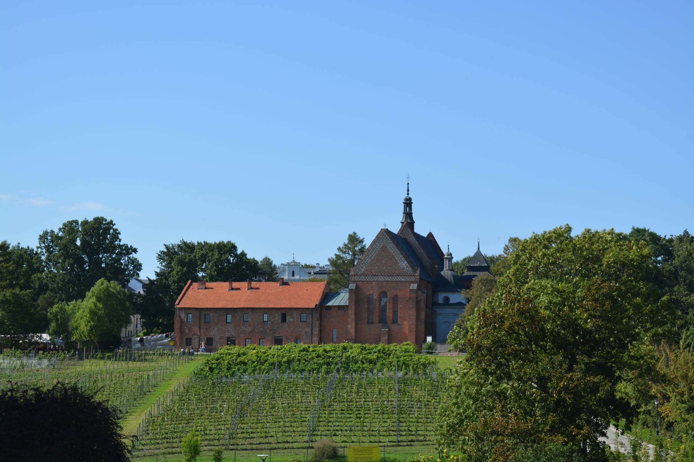
Zwiedzanie
Zamość
Pierwszy wieczór w Zamościu spędziliśmy na spokojnym spacerze po rynku i miejskich fortyfikacjach. Zamość został założony pod koniec XVI wieku przez Jana Zamoyskiego i do dziś zachował swój renesansowy układ urbanistyczny, dzięki czemu w 1992 roku trafił na listę światowego dziedzictwa UNESCO. Kolejny dzień rozpoczęliśmy od spaceru po Parku Miejskim, który otacza zabytkowe fortyfikacje miasta. Przeszliśmy się alejkami wzdłuż stawów, pomnika Jana Zamoyskiego i bastionów, które przez wieki chroniły miasto. Później przenieśliśmy się na starówkę. Rynek Wielki, otoczony kolorowymi kamienicami z arkadami, jest sercem Zamościa i jednym z najlepiej zachowanych renesansowych rynków w Europie. Odwiedziliśmy też Rotundę Zamojską, która była częścią systemu obronnego twierdzy, a dziś mieści muzeum poświęcone historii regionu. W jednej z atrakcji mogliśmy także spróbować swoich sił w strzelaniu z łuku. Następnie poszliśmy do katedry zamojskiej.
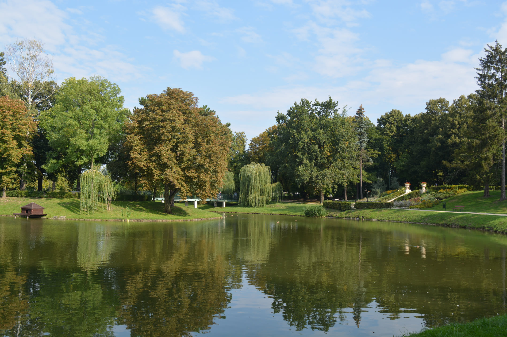
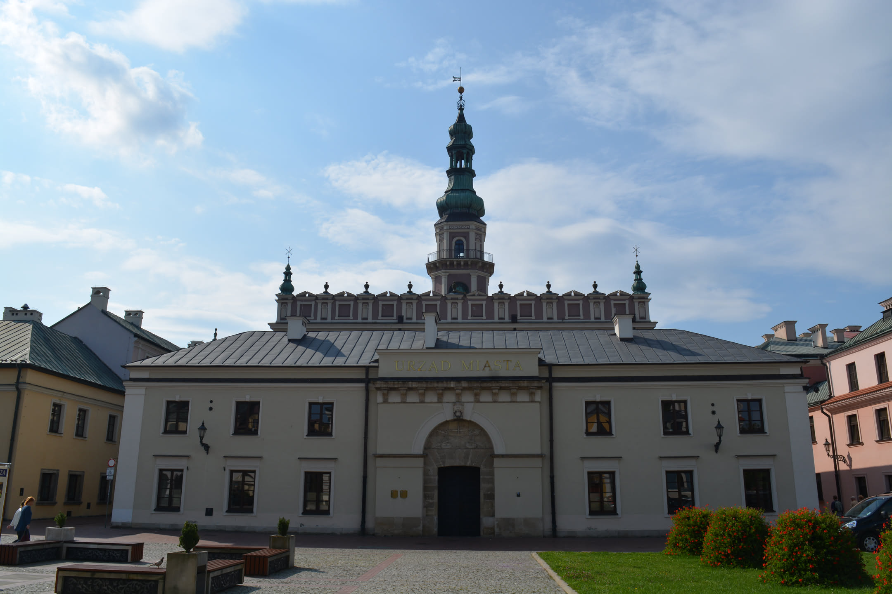
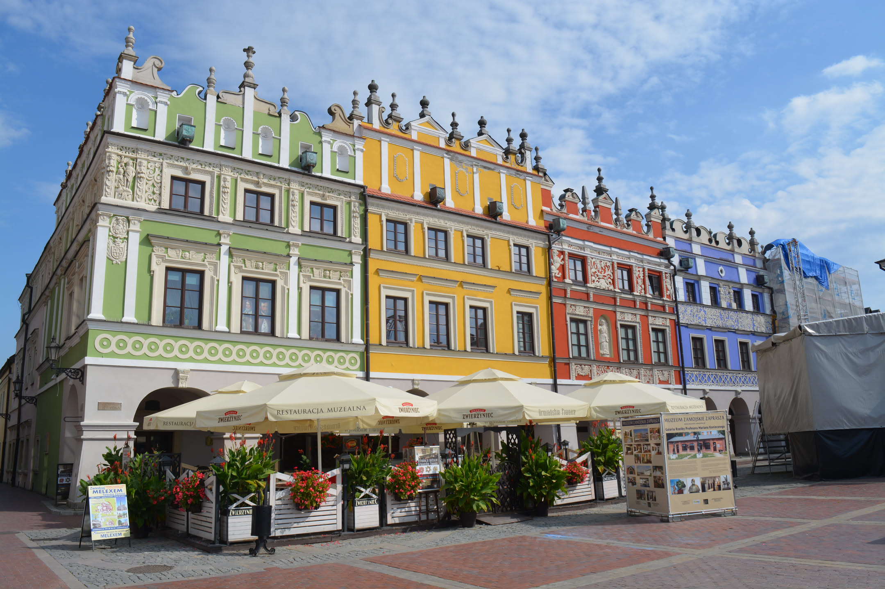
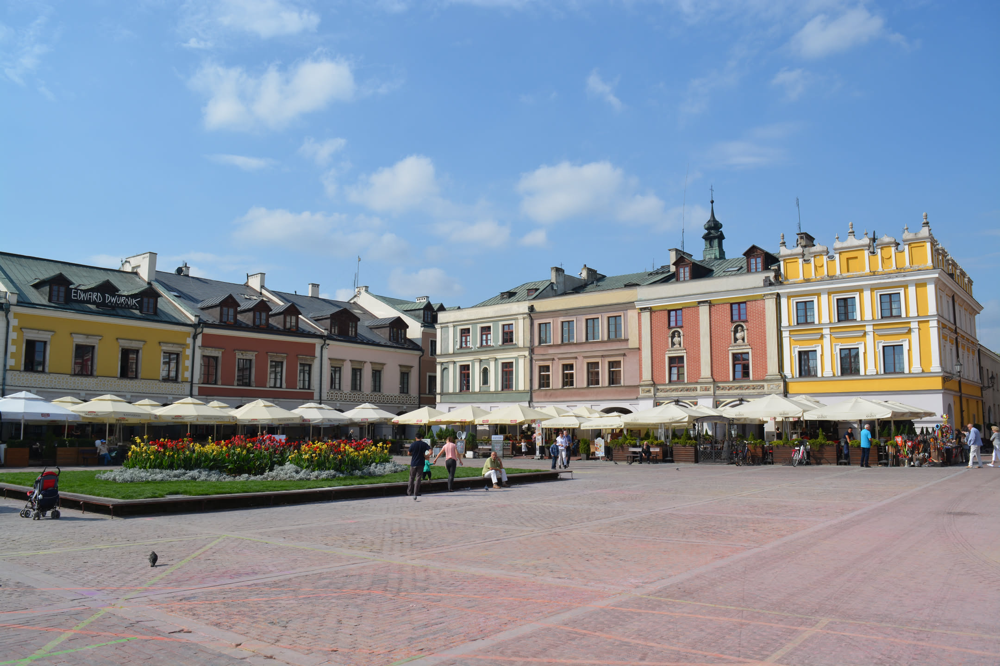
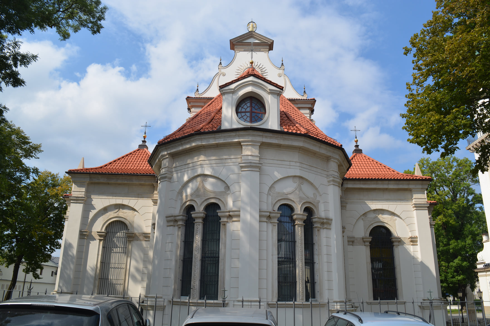
Zwiedzanie
Zwierzyniec i Rzeszów
Kolejnym przystankiem naszej podróży był Zwierzyniec. Zwiedzanie rozpoczęliśmy od jednego z najbardziej charakterystycznych zabytków miasta czyli kościoła ś w. Jana Nepomucena, znanego jako „Kościół na Wodzie”. Świątynia została wybudowana w XVIII wieku na niewielkiej wyspie pośrodku stawu. Według legendy miejsce to wybrano dlatego, że właśnie tutaj św. Jan Nepomucen miał objawić się mieszkańcom. Następnie odwiedziliśmy zabytkowy Browar Zwierzyniec, który do dziś pozostaje jednym z najstarszych działających browarów w Polsce. Podczas zwiedzania mogliśmy zobaczyć dawne pomieszczenia produkcyjne i poznać historię warzenia piwa na Roztoczu. Sam browar funkcjonuje nieprzerwanie od ponad dwustu lat, choć na przestrzeni swojej historii był niszczony przez pożary i wojny. Ostatnim przystankiem naszej podróży był Rzeszów. Zwiedzanie rozpoczęliśmy od spaceru po spokojniejszej, willowej części miasta, mijając zabytkowe kamienice i dawne rezydencje. Następnie dotarliśmy w okolice Zamku Lubomirskich, który przez wieki pełnił funkcję magnackiej rezydencji, a później był wykorzystywany między innymi jako więzienie. Na końcu dotarliśmy na rynek, otoczony kolorowymi kamienicami i licznymi restauracjami. W samym centrum stoi charakterystyczna studnia, będąca jednym z symboli Rzeszowa.
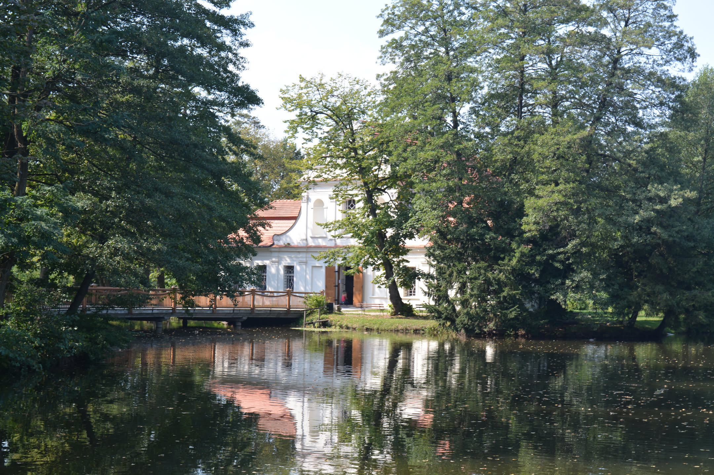
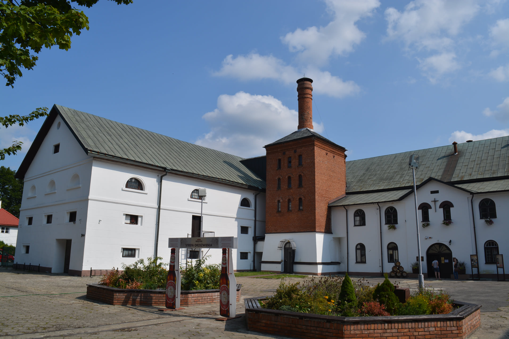
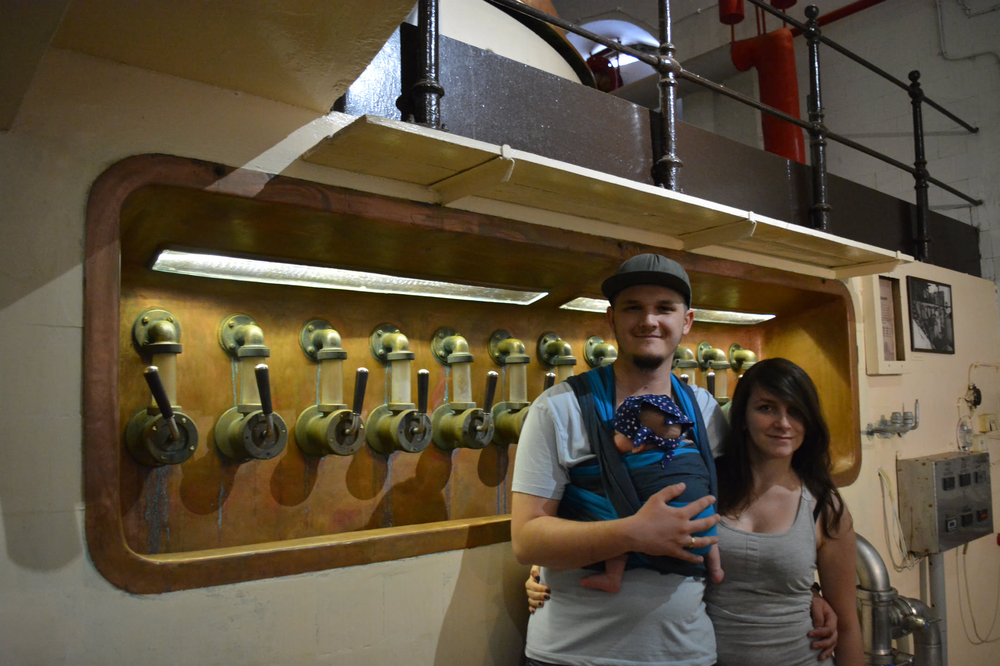
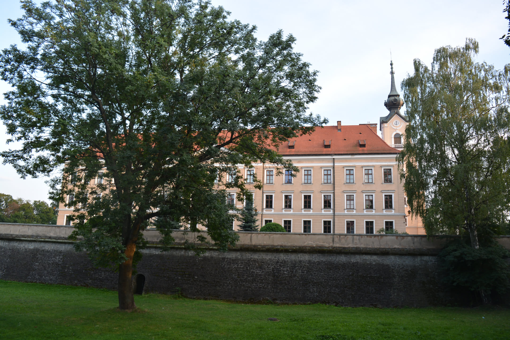
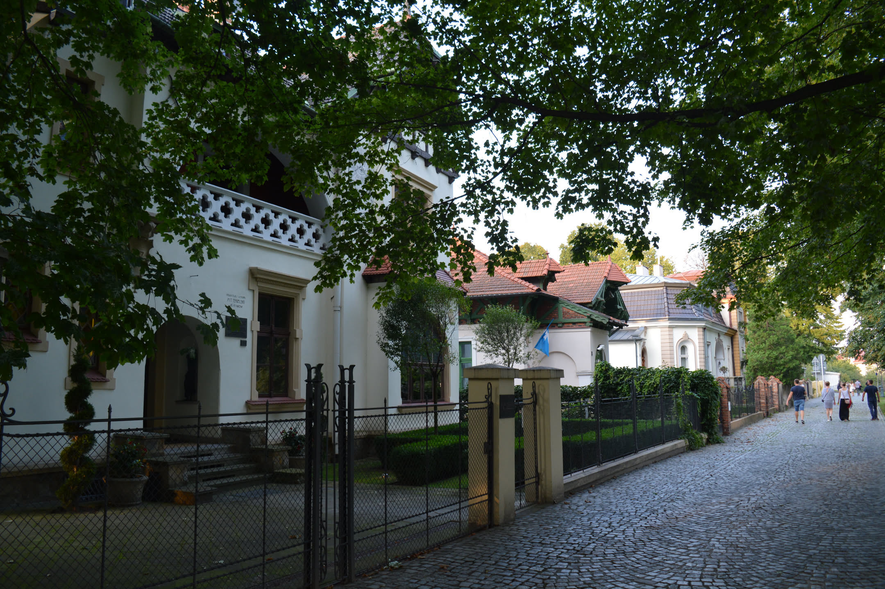
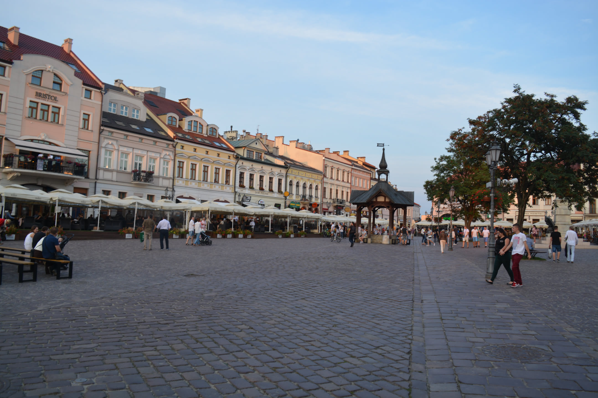